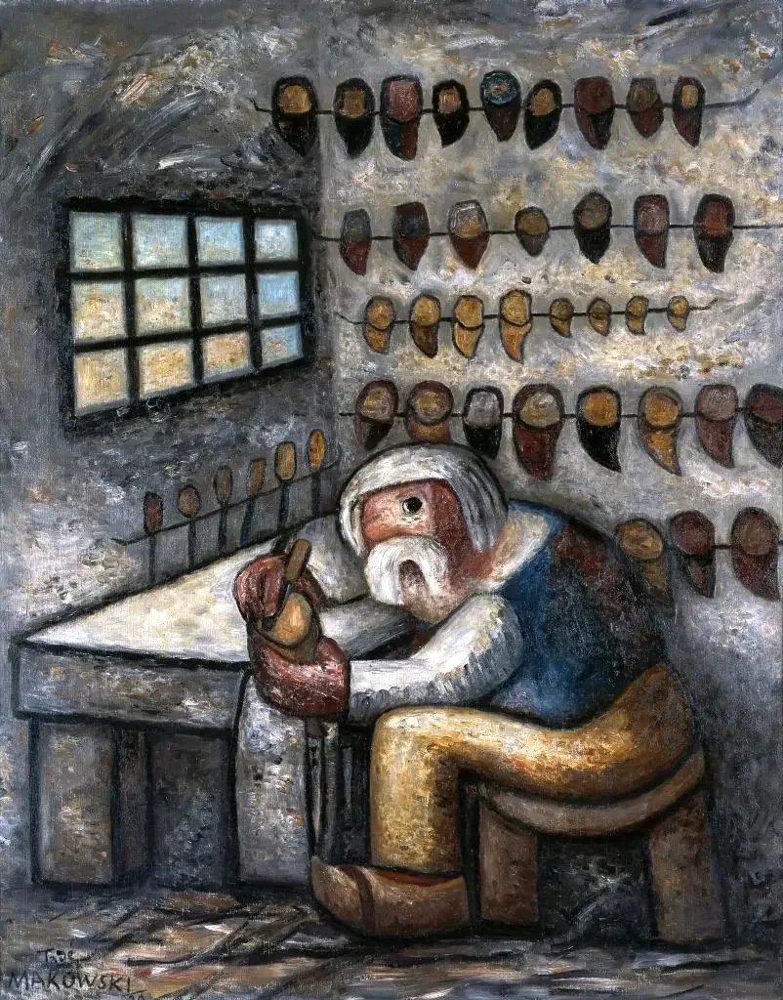

아직 펼치지 않은 카드겨울밤에 읽는 이야기 · 5톨스토이 「구두장이 마르틴」‘내일 너를 찾아가마.’ 꿈결에 이 목소리를 들은 구두장이는 하루 종일 창밖을 보며 기다렸어요. 그날 정말 누가 찾아왔을까요?‘내일 찾아갈게.’ 이 말을 들은 구두장이 할아버지는 누구를 기다렸을까?
어느 겨울날러시아의 한 도시 · 구두장이 마르틴의 반지하 방
톨스토이 「구두장이 마르틴」
러시아의 한 도시, 반지하 방에 사는 늙은 구두장이 마르틴은 어느 밤 “내일 거리를 내다보아라, 내가 가겠다” 하는 목소리를 들어요. 이튿날 그는 창가에서 일하며 하루 종일 그분을 기다려요. 그날 마르틴이 손님들에게 내준 것을 이야기의 차례대로 그 방에 놓아 보세요.
구두장이 마르틴 할아버지가 꿈결에 ‘내일 너를 찾아가마’ 하는 목소리를 들었대. 다음 날 할아버지는 창밖을 보며 기다렸어. 그날 할아버지가 누구에게 무엇을 내줬는지, 하나씩 놓아 보자.
검수 전 시안이에요(기준서 2판). 장면은 톨스토이의 이야기를 모드 부부가 영어로 옮긴 글(1906)을 따랐고, 우리말은 이 안내서가 옮겼어요. 반지하 방 무대는 이 안내서가 그렸어요. 상상은 ‘눈 감고 상상해 보기’에만 썼어요.
시안 확인용카드 단계 미리 보기
1
반지하 방의 창
어느 도시에 구두장이 마르틴 아브데이치가 살았어요. 그의 방은 반지하에 있었고, 창은 길 쪽으로 하나뿐이었어요. 창으로는 지나가는 사람들의 발만 보였어요.
그래도 마르틴은 신발만 보고 누구인지 알았어요. 동네 신발 거의 모두가 한 번쯤 그의 손을 거쳤거든요. 창 너머로 자기가 고친 신발이 지나가는 것도 자주 보았어요.
마르틴은 아내를 잃고, 세 살 아들을 혼자 키웠어요. 그 아들마저 병으로 세상을 떠나자, 그는 하나님을 원망하고 교회에도 가지 않았어요.
어느 날, 여덟 해째 순례 길을 걷던 고향 마을의 노인이 찾아와요. 이제 살고 싶지도 않다는 마르틴에게, 노인은 하나님을 위해 살라고, 복음서를 사서 읽어 보라고 말해요.
마르틴은 큰 글씨 신약 성경을 사서 읽기 시작해요. 처음에는 쉬는 날에만 읽으려 했지만, 곧 날마다 일을 마치면 등잔 아래서 읽었어요.
어느 밤, 누가복음 7장을 읽어요. 부자 바리새인이 예수님을 집에 청하고도 발 씻을 물조차 내주지 않은 대목이에요(누가복음 7장 44절). 마르틴은 생각해요. ‘그 바리새인은 나 같은 사람이었구나. 자기만 생각했지. 그분이 내게 오신다면, 나도 그렇게 맞을까?’
그러다 깜빡 잠든 그의 귀에 목소리가 들려요. “마르틴, 마르틴! 내일 거리를 내다보아라. 내가 가겠다.”
마르틴 할아버지는 반지하 방에 살았어. 창으로는 지나가는 사람들의 발만 보였대. 그래도 신발만 보고 누군지 다 알았어!
물어보기너는 신발만 보고도 누구인지 알아맞힐 수 있는 사람이 있어?
2
기다린 하루
이튿날, 마르틴은 날이 밝기 전에 일어나 기도해요. 화덕에 불을 지펴 양배추 수프와 메밀죽을 끓이고, 사모바르에 불을 붙이고, 앞치마를 두르고 창가에 앉아요. 그러고는 일보다 창밖을 더 많이 내다봐요. 낯선 신발이 지나가면 몸을 숙여 얼굴을 올려다봐요.
새 펠트 장화를 신은 문지기가 지나가고, 물장수가 지나가요. 그리고 늙은 병사 스테파니치가 와서 창 앞의 눈을 치워요. 마르틴은 낡은 펠트 장화에 가죽 덧신을 댄 그 신발을 보고 그를 알아봐요.
그날 마르틴이 손님들에게 내준 것을, 아래 무대에 이야기의 차례대로 놓아 보세요. 창밖에는 그때마다 누가 서 있었는지도 보여요.
우리 집이라면, 찾아온 사람에게 따뜻한 차 한 잔을 어디서 내줄까요?
“내가 배고플 때 너희가 먹을 것을 주었고, 목마를 때 마실 것을 주었고, 나그네였을 때 맞아들였다.”
그날 밤 펼쳐진 복음서 맨 위에서 마르틴이 읽은 말씀 · 마태복음 25장 35절을 풀어 씀
그 쪽 맨 아래에는 이런 말씀도 있었어요. 가장 작은 이 하나에게 해 준 것이 곧 나에게 해 준 것이라는 말씀이에요(마태복음 25장 40절).
마르틴은 알았어요. 꿈이 헛되지 않았다는 것을요. 그날 구세주가 정말 그를 찾아왔고, 그가 그분을 맞아들였다는 것을요.
그날 아침 창 너머로 발부터 보았던 사람들이, 그날 밤에는 웃는 얼굴로 그 앞에 나타났어요.
차 한 잔, 따뜻한 수프, 낡은 외투, 사과 하나! 그리고 밤이 되자 등잔을 켰어. 하나씩 놓아 보자.
물어보기어두운 구석에서 “나를 모르겠니?” 하고 나온 사람들은 누구였을까?
눈 감고 상상해 보기
반지하 방에 양배추 수프 냄새가 배어 있어요. 사모바르가 낮게 끓고, 송곳이 가죽을 뚫는 소리가 들려요. 창밖으로는 눈 밟는 발소리가 지나가요. 밤이 되자 등잔 불빛이 펼친 복음서 위에 고여요.
눈을 감아 봐. 사모바르가 보글보글, 창밖에서 뽀드득뽀드득 발소리. 누가 지나갈까?
나의 자리
마르틴은 낯선 신발이 지날 때마다 몸을 숙여 얼굴을 올려다봤어요. 오늘 내 곁을 지나간 신발의 주인은 누구였을까요?
마르틴 할아버지는 신발만 보고도 누군지 알았대. 오늘 네 곁을 지나간 신발의 주인은 누구누구였어?
마음에 닿는 한 줄을 고르거나 직접 써 보세요. 한 줄을 남기면 이 자리의 도장이 찍혀요. 이 기기에만 저장돼요.
더 깊이
궁금한 칸만 펼쳐 읽어도 괜찮아요.
알고 보면
바탕이 된 이야기 톨스토이가 바탕으로 삼은 이야기가 따로 있어요. 프랑스 개신교 목사이자 작가인 뤼벤 사양스(Ruben Saillens)의 성탄 이야기 「마르탱 할아버지」(Le Père Martin)예요. 러시아 고리키 세계문학연구소의 시조바는 2019년 논문에서 톨스토이의 원고를 모두 살펴, 톨스토이가 이 이야기를 어떻게 받아들였는지 새로 짚었어요.
잊어버린 사과값 마르틴은 사과값을 치르겠다고 했지만, 할머니는 그 돈 받는 것을 그만 잊어버려요. 소년은 할머니의 자루를 대신 메고, 둘은 나란히 걸어가요.
다른 제목의 오페라 체코 작곡가 보후슬라프 마르티누는 1952년, 이 이야기로 한 막짜리 오페라를 지었어요. 그런데 제목은 톨스토이의 다른 이야기 제목인 「사람은 무엇으로 사는가」예요.
점토 인형 영화 1977년 윌 빈턴은 이 이야기를 점토 인형 영화 「구두장이 마르틴」(Martin the Cobbler)으로 만들었어요. 톨스토이의 딸 알렉산드라 톨스타야가 이야기를 소개하고 들려줘요.
기록마다 다른 점
제목 모드 부부는 「Where Love Is, God Is」로, 1887년 미국에서 나온 네이선 해스컬 돌의 번역은 「Where Love Is, There God Is Also」로 옮겼어요. 영어권에서는 「구두장이 마르틴」(Martin the Cobbler)이라고도 불러요.
이름 러시아어 원문의 이름은 마르틴 아브데이치(Мартын Авдеич)예요. 모드 부부는 Martin Avdéitch로, 돌은 Martuin Avdyeitch로 적었어요. 우리말 그림책은 ‘마틴’으로 옮겼어요.
원문 읽기
확인한 날 · 2026년 11월 18일 · 바뀌기 쉬운 정보라 정기적으로 다시 확인해요
이 이야기는 러시아어 원문과 모드 부부의 영어 번역 모두 저작권이 끝나 누구나 읽을 수 있어요.
이야기의 차례대로 금박
그날 마르틴이 내준 것을 이야기의 차례(아침의 차 한 잔부터 저녁의 등잔까지)대로 다 놓으면 카드에 금박이 입혀져요.
사모바르와 차 → 양배추 수프와 빵 → 낡은 외투 → 사과 하나 → 등잔과 복음서 차례로 놓기
우리 집 차 한 잔 자리 채색
둘 가운데 하나만 해도 카드가 채색돼요.
우리 집이라면 찾아온 사람에게 차 한 잔을 어디서 내줄지 고르기
아이와 함께 ‘영화처럼 보기’를 끝까지 보기
근거 보기 (6)
- 기독교 고전 전자 도서관(CCEL): 『스물세 이야기』(L. and A. Maude 옮김) — Where Love Is, God Is (1885) — 반지하 방의 창, 신발로 사람을 앎, 아내와 세 살 아들, 순례자 노인, 큰 글씨 신약, 누가복음 6·7장과 바리새인, 목소리, 이튿날 아침(기도·화덕·양배추 수프와 메밀죽·사모바르·앞치마·창가), 문지기와 물장수, 스테파니치(펠트 장화와 가죽 덧신·삽·차 두 잔·엎은 잔과 설탕), 엄마와 아기(여름옷·계단·수프와 빵·식탁·여덟 달·숄·낡은 외투), 할머니와 소년(해진 모자·송곳·용서·사과값·자루), 저녁(등잔·복음서·표시해 둔 곳·구석의 목소리·구름처럼), 마태복음 25장 35·40절, 마지막 문장
- 위키문헌(러시아어): 「Где любовь, там и Бог」 — 창으로 발만 보였지만 신발로 사람을 알아봄, 자기가 고친 신발을 창으로 자주 봄, 이름 Мартын Авдеич
- 위키백과(영어): Where Love Is, God Is — 1885년, 다른 영어 제목들, 마르티누의 오페라(1952), 윌 빈턴의 점토 인형 영화(1977)와 알렉산드라 톨스타야
- 위키백과(영어): Ruben Saillens — 프랑스 개신교 목사이자 작가, 성탄 이야기 「Le Père Martin」
- 시조바(고리키 세계문학연구소, 2019), 「톨스토이 「사랑이 있는 곳에 하나님이 계시다」의 탄생과 시학」 요약 — 알려진 원고 전체, 바탕 이야기 사양스의 「Father Martin」
- 톨스토이 아카이브: 네이선 해스컬 돌의 번역 「Where Love is There God is Also」(T. Y. 크로웰, 1887) — Martuin Avdyeitch
그림·사진·소리 출처
‘처음 만나는 기독교 문화’의 깊은 카드예요. 실제 인물의 사진은 쓰지 않았어요. 카드 단계와 남긴 글은 이 기기에만 저장돼요.